Costa del Sol · Casares
Immobilien zum Verkauf in Casares
Wohnungen mit Meer- und Golfblick in Casares Costa, Häuser im Resort Finca Cortesín und Villen mit Blick auf die Küste. Hier finden Sie die Immobilien, die wir heute in Casares verkaufen, mit einem kurzen Überblick über die Viertel und die echten Kaufkosten.
- 18Immobilien zum Verkauf in Casares
- ab 245.000 €für eine neue Wohnung
- ca. 35 Min.zum Flughafen Gibraltar
- Finca Cortesínein Luxus-Golfresort
Jetzt zu verkaufen
Immobilien zum Verkauf in Casares
Vor allem neue Wohnungen mit 2 oder 3 Schlafzimmern und Meer- oder Golfblick in Casares Costa, dazu Penthäuser und Luxusimmobilien in Finca Cortesín. Die Preise sind die heutigen Angebotspreise; fragen Sie uns nach der aktuellen Verfügbarkeit.
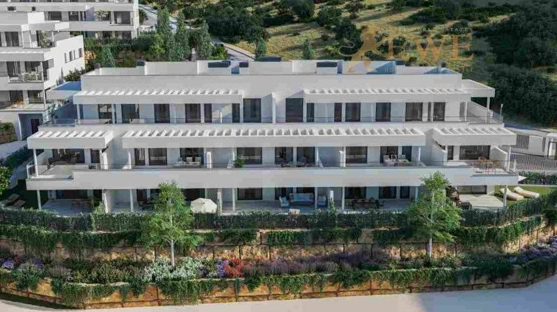
Casares
New Apartments with Terraces in Casares Costa
245.000 €
1 Schlafzimmer · 1 Bad · 51 m²Ref. EWE3894
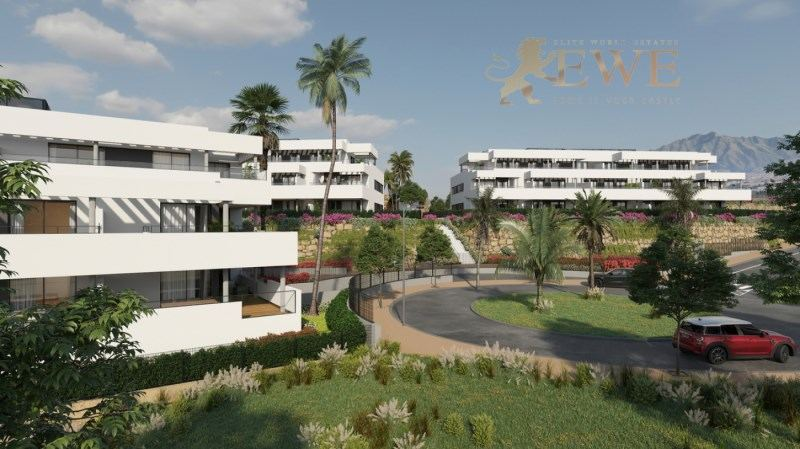
Casares
Attractive apartment with sea and mountain views in Casares
301.000 €
2 Schlafzimmer · 2 Bäder · 64.42 m²Ref. EWE3649
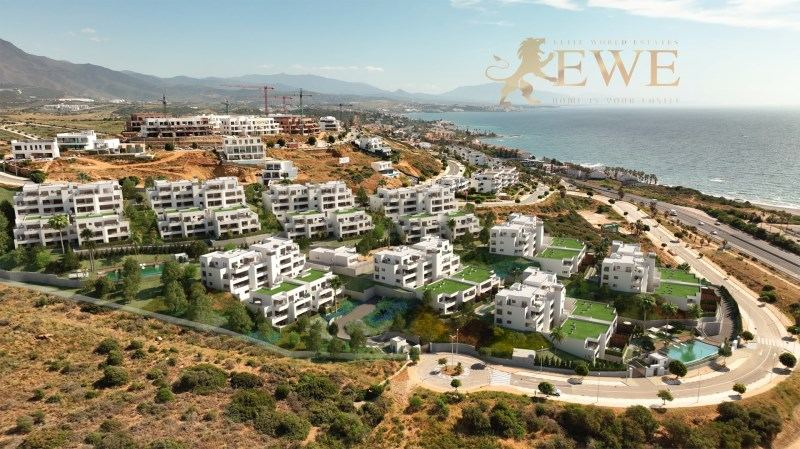
Fertigstellung 2026Casares
Modern apartment with sea views in Casares Costa
398.000 €
2 Schlafzimmer · 1 Bad · 70 m²Ref. EWE3166
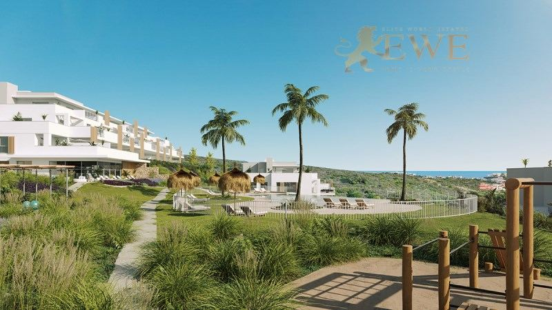
Casares
Modern Apartments with Sea and Golf Course Views in Casares Costa
428.000 €
2 Schlafzimmer · 2 Bäder · 78 m²Ref. EWE3778
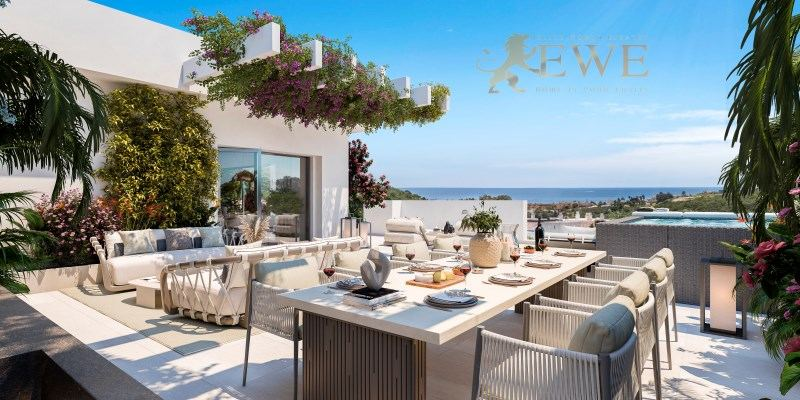
Casares
Elegant flat with sea views in Casares Costa Golf
429.000 €
2 Schlafzimmer · 2 Bäder · 67 m²Ref. EWE3315
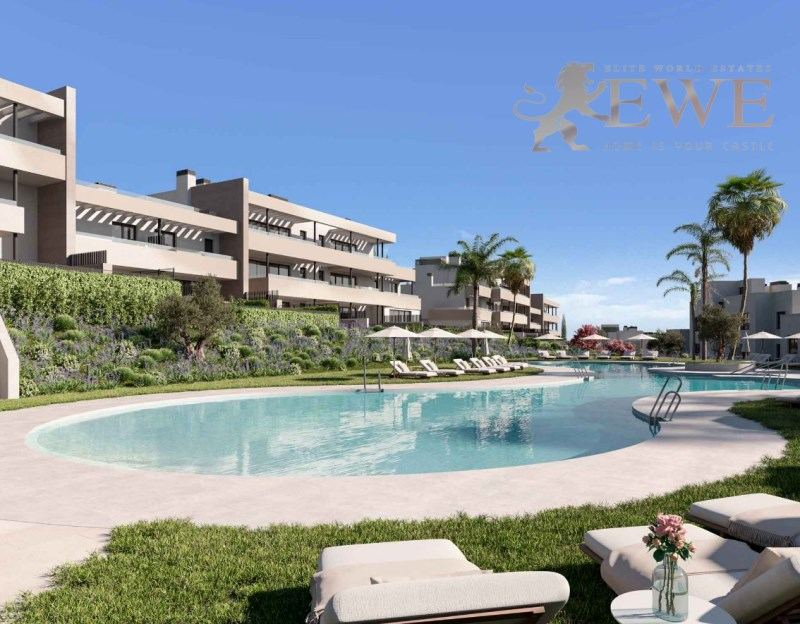
Casares
Elegant apartment next to the golf course in Casares Costa
435.000 €
2 Schlafzimmer · 2 Bäder · 70 m²Ref. EWE3268
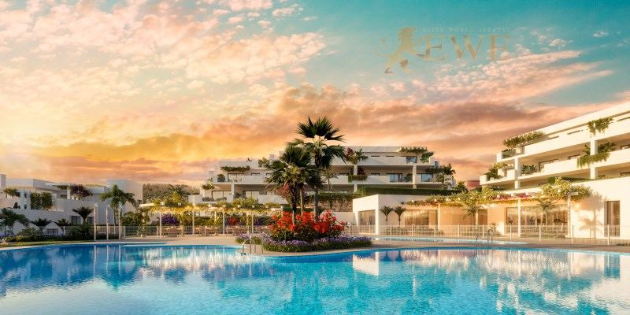
Casares
Fantastic apartment with sea views in Casares.
446.000 €
2 Schlafzimmer · 2 Bäder · 68 m²Ref. EWE3681
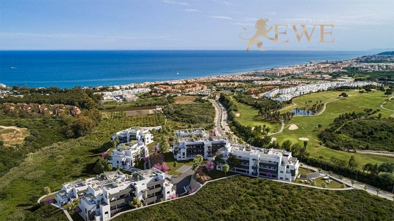
Casares
Apartments with Sea and Golf Course Views in Casares Costa
450.900 €
2 Schlafzimmer · 2 Bäder · 71 m²Ref. EWE3781
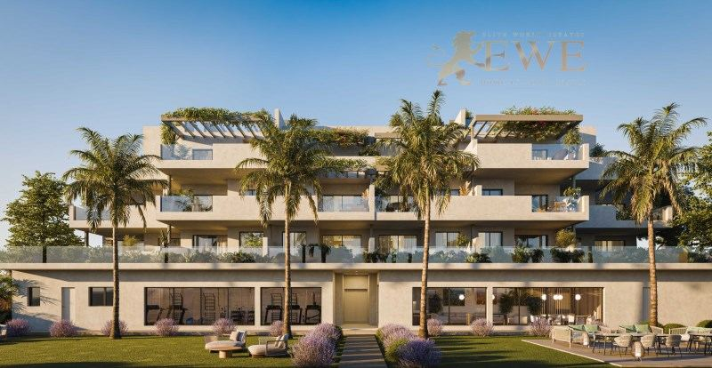
Fertigstellung Q3 2029Casares
Elegant Apartments Close to the Sea in Casares Costa
450.900 €
2 Schlafzimmer · 2 Bäder · 70 m²Ref. EWE3838
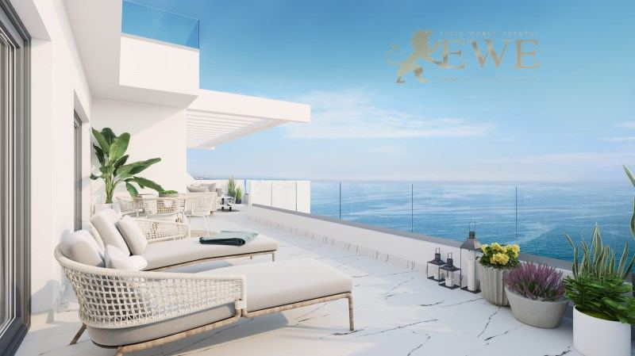
Casares
Apartment with sea view, 250m from the beach in Casares
505.000 €
2 Schlafzimmer · 2 Bäder · 102 m²Ref. EWE3146
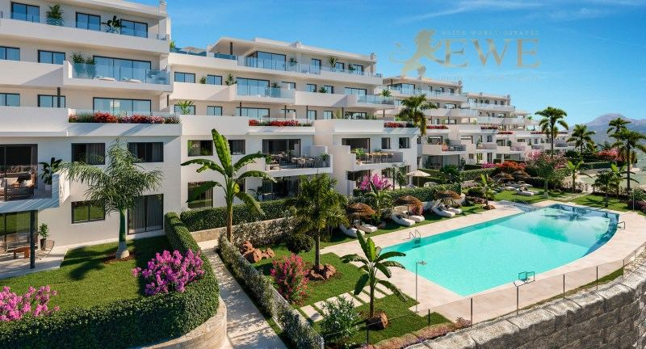
Casares
Elite apartment with sea view in Finca Cortesín, Casares
584.000 €
2 Schlafzimmer · 2 Bäder · 111 m²Ref. EWE2157
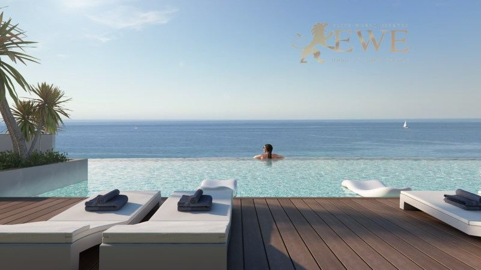
Fertigstellung 2026Casares
Wonderful apartment with sea views in Casares Costa
620.000 €
3 Schlafzimmer · 2 Bäder · 94 m²Ref. EWE3167
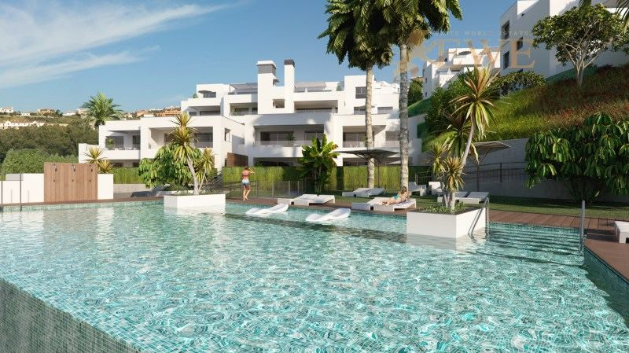
Fertigstellung 2026Casares
Wonderful penthouse with sea views in Casares Costa
620.000 €
4 Schlafzimmer · 3 Bäder · 125 m²Ref. EWE3399
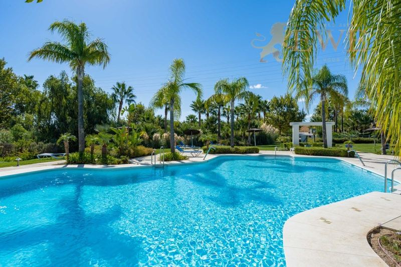
BezugsfertigCasares
Penthouse in Estepona, Alcazaba Lagoon
649.950 €
2 Schlafzimmer · 2 Bäder · 118 m²Ref. EWE2212
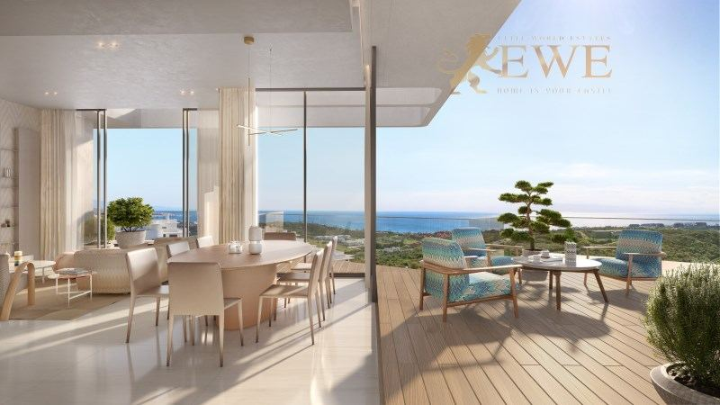
Casares
Dazzling apartment with outstanding sea views in Casares
1.001.020 €
2 Schlafzimmer · 2 Bäder · 154.79 m²Ref. EWE3237
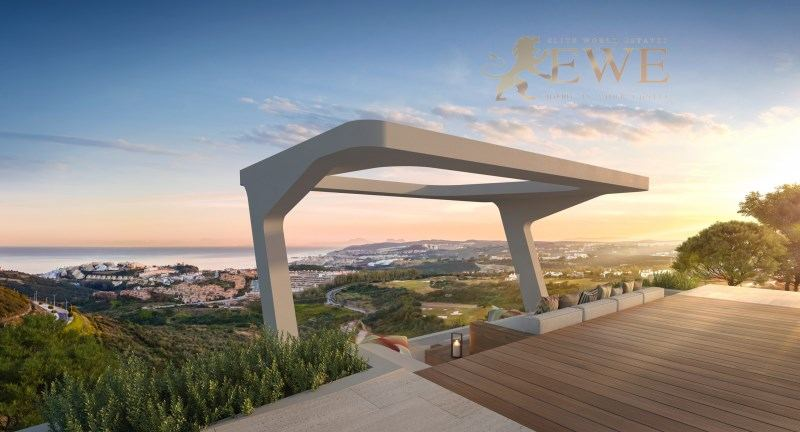
Casares
Exclusive apartment in the elite Finca Cortesin Resort
2.161.990 €
3 Schlafzimmer · 3 Bäder · 221.24 m²Ref. EWE3238
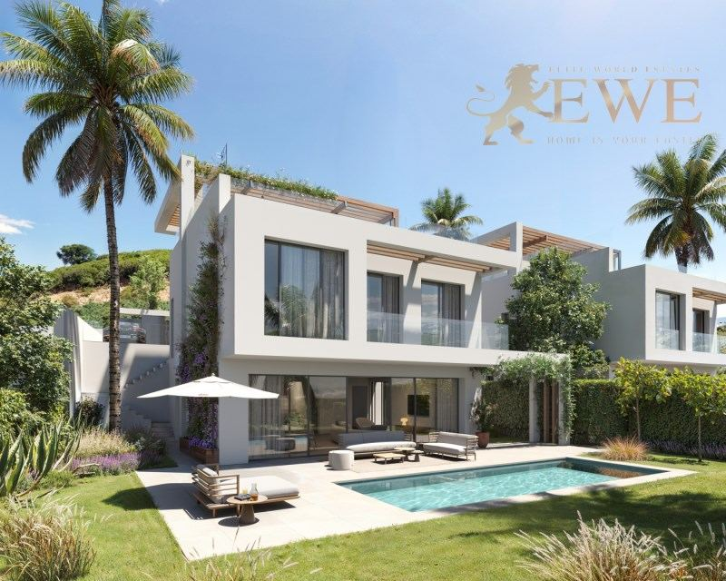
Casares
Stunning villa with coastal views in Casares
2.900.000 €
4 Schlafzimmer · 4 Bäder · 211 m²Ref. EWE3895
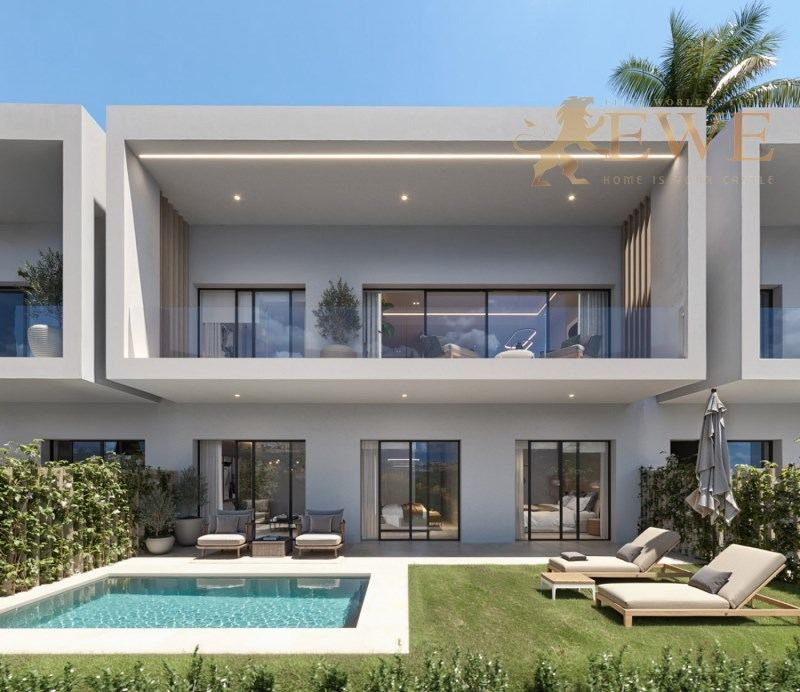
Casares
Sea View Villa for Sale in Finca Cortesín, Casares
Preis auf Anfrage
4 Schlafzimmer · 4 Bäder · 160 m²Ref. EWE3901
Die Stadt
Leben in Casares
Casares ist eine Gemeinde an der westlichen Costa del Sol, zwischen Estepona und Manilva. Das Dorf gehört zu den schönsten Andalusiens: weiße Häuser an einem steilen Hügel, gekrönt von den Ruinen einer Burg, etwa 15 Minuten landeinwärts vom Meer.
Die meisten Immobilien im Verkauf liegen in Casares Costa, dem Küstenteil, mit Stränden, Golfplätzen und modernen Wohnanlagen mit Blick über das Meer bis Gibraltar und Afrika. Hier liegt auch Finca Cortesín, ein Luxusresort mit Golfplatz, Hotel und Beachclub.
Das Leben ist hier ruhiger und die Preise sind niedriger als in Marbella, während Geschäfte und Versorgung in Estepona etwa 15 Minuten entfernt sind. Der Flughafen Gibraltar ist mit dem Auto etwa 35 Minuten entfernt, der Flughafen Málaga etwa eine Stunde und eine Viertelstunde.
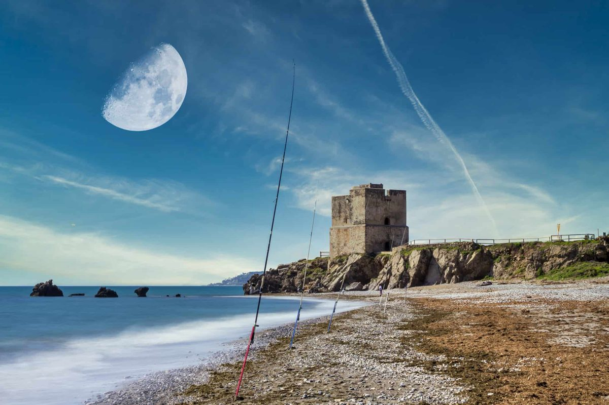
Wo kaufen
Die wichtigsten Viertel von Casares
Casares Costa
Der Küstenstreifen mit Stränden und modernen Anlagen. Wohnungen und Penthäuser mit Meerblick, viele nahe am Strand.
Casares Golf
Die Gegend um die Golfplätze wenige Minuten landeinwärts. Wohnungen mit Golf- und Meerblick, oft mit großen Terrassen.
Finca Cortesín
Ein Luxusresort mit Golfplatz, Hotel und Beachclub. Exklusive Wohnungen und Villen.
Dorf Casares
Das weiße Dorf am Hügel, mit Burg, kleinen Plätzen und Aussicht. Dorfhäuser und einige Wohnungen.
Budget
Was der Kauf in Casares kostet
Zum Kaufpreis kommen Steuern und Gebühren. Für eine neue Immobilie zu 450.900 € sind das zum Beispiel 45.090 € Mehrwertsteuer und 5.411 € Stempelsteuer, dazu Notar, Grundbuch und Anwalt. Für Bestandsimmobilien gelten andere Steuern, fragen Sie uns also immer nach der genauen Summe für die Immobilie, die Ihnen gefällt.
| Neubau | 10 % Mehrwertsteuer (IVA) + 1,2 % Stempelsteuer (AJD) |
|---|---|
| Bestandsimmobilie | 7 % Grunderwerbsteuer (ITP) |
| Notar, Grundbuch, Anwalt | ca. 1,5–2,5 % des Preises |
| Jedes Jahr | Grundsteuer IBI und Gemeinschaftskosten, je nach Immobilie |
Fragen
Immobilienkauf in Casares: Fragen und Antworten
Was kostet eine Wohnung in Casares?
Unsere neuen Wohnungen in Casares beginnen heute bei 245.000 €. Die meisten Wohnungen mit 2 oder 3 Schlafzimmern, die wir in Casares Costa verkaufen, kosten zwischen 300.000 € und 620.000 €. In Finca Cortesín kosten Wohnungen etwa 580.000 € bis über 2 Mio. €, und unsere Villa mit Küstenblick kostet 2,9 Mio. €.
Casares oder Estepona: was ist besser?
Estepona ist eine größere Stadt mit Geschäften, Krankenhaus und einer Altstadt am Meer. Casares Costa ist ruhiger, mit Golf und neueren Häusern, und die Preise sind oft niedriger. Estepona ist mit dem Auto etwa 15 Minuten entfernt.
Wie weit ist Casares vom Flughafen entfernt?
Der Flughafen Gibraltar ist mit dem Auto etwa 35 Minuten entfernt, der Flughafen Málaga liegt etwa 110 km entfernt, rund eine Stunde und eine Viertelstunde.
Welche Kosten kommen zum Kaufpreis hinzu?
In Andalusien zahlen Sie bei einem Neubau 10 % Mehrwertsteuer und 1,2 % Stempelsteuer, bei einer Bestandsimmobilie 7 % Grunderwerbsteuer. Notar, Grundbuch und Anwalt kosten zusammen etwa 1,5–2,5 %.
Können Ausländer in Casares eine Immobilie kaufen?
Ja. Jeder kann in Spanien eine Immobilie kaufen. Sie brauchen eine spanische Steuernummer (NIE) und meist ein spanisches Bankkonto, und wir helfen Ihnen bei beidem. Mehr dazu in unserem Ratgeber zur NIE-Nummer.


Sie suchen ein Zuhause in Casares?
Nennen Sie uns Ihr Budget und Ihre Wünsche. Wir antworten innerhalb eines Werktags, auf Deutsch, Englisch, Spanisch oder Polnisch.